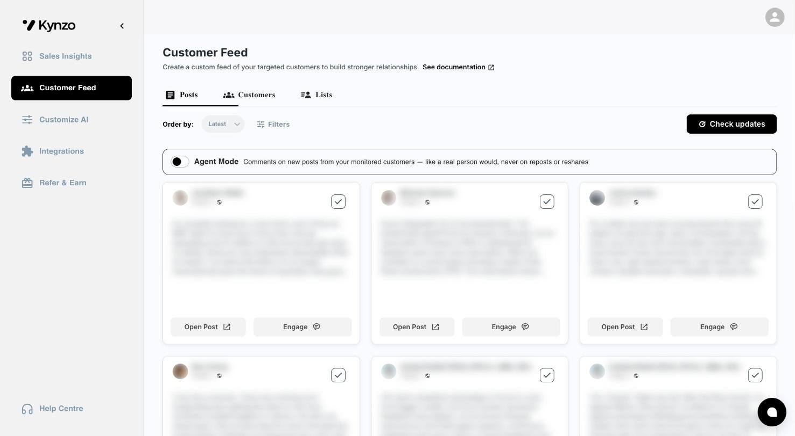
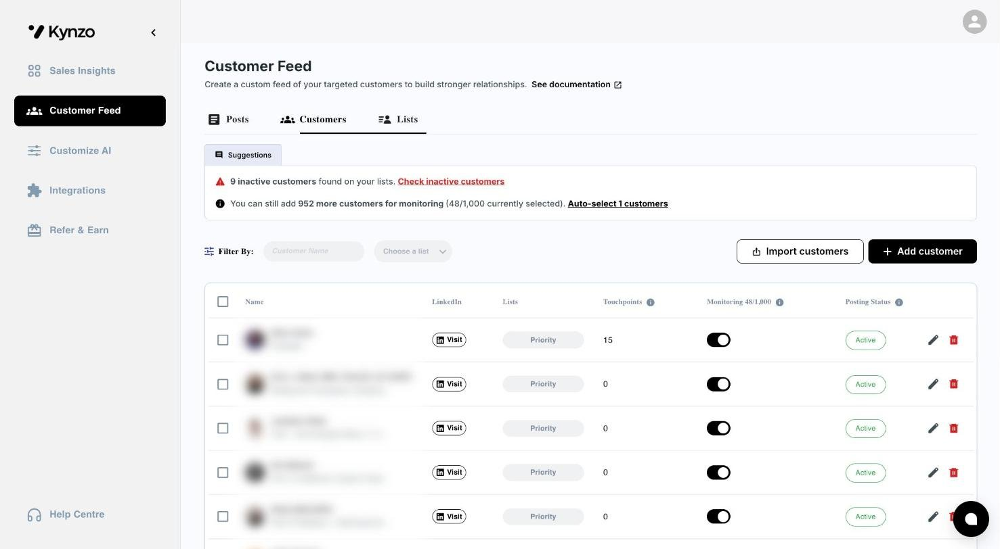
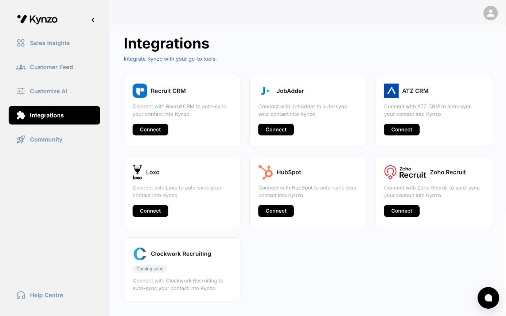
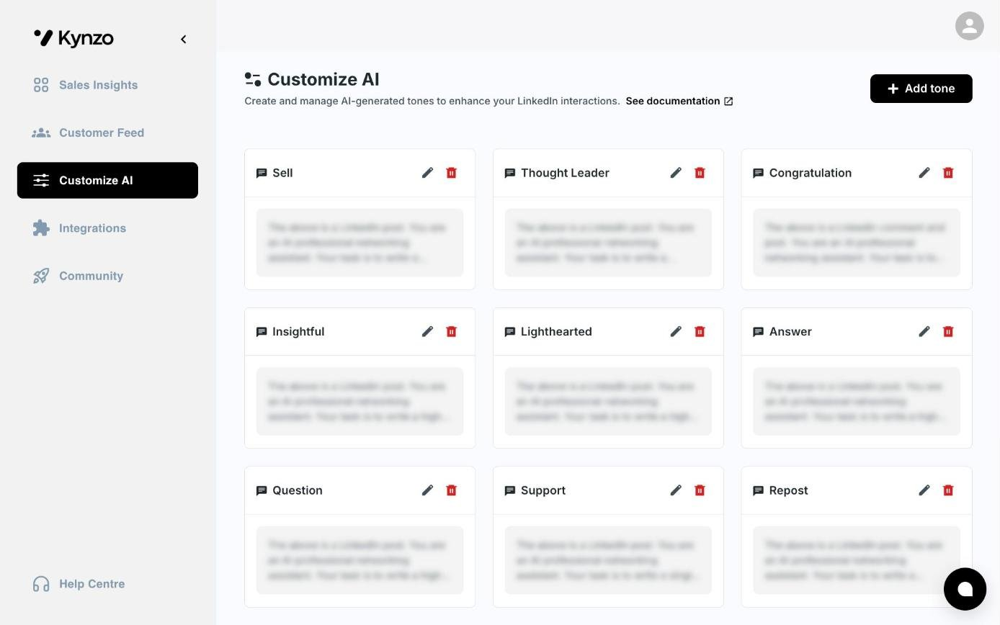

02 — Kynzo
LinkedIn commenting for recruiters, connected to the CRMs they already use
Built and maintained for the Kynzo team.

Kynzo drafts the comment and works with the recruiter's CRM
A Chrome extension adds Kynzo to LinkedIn. It drafts comments in the user's saved tones, and with Agent Mode on it comments on new posts from monitored customers by itself. Posts from the accounts a recruiter is targeting are pulled into the Kynzo dashboard, so they can comment there instead of scrolling the feed.
Kynzo integrates with the major recruiting CRMs, so the recruiter's contacts stay in the CRM they already use.
What we built



- Integrations
- Recruit CRM, JobAdder, ATZ CRM, Loxo, HubSpot and Zoho Recruit, with Clockwork Recruiting next
- Parts
- Chrome extension, web app, API, and background services that generate comments and read LinkedIn data
- Built with
- React, Django and Python services on DigitalOcean
- Our role
- Built and maintained for the Kynzo team
Want something like this for your business?
Writing about Kynzo
No posts yet.